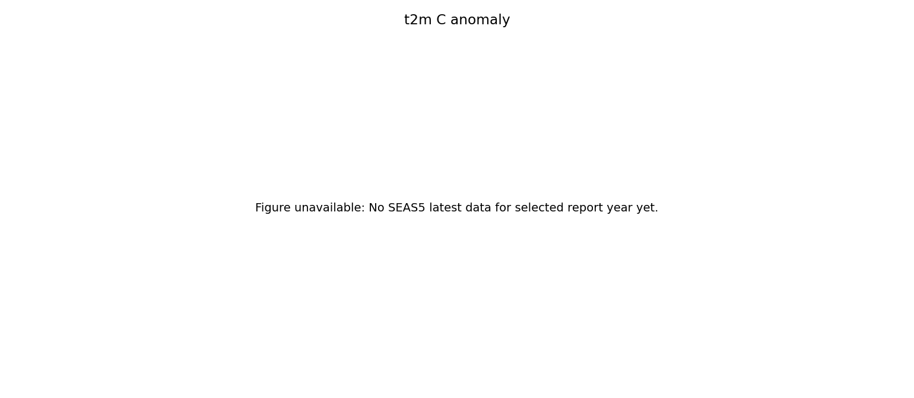
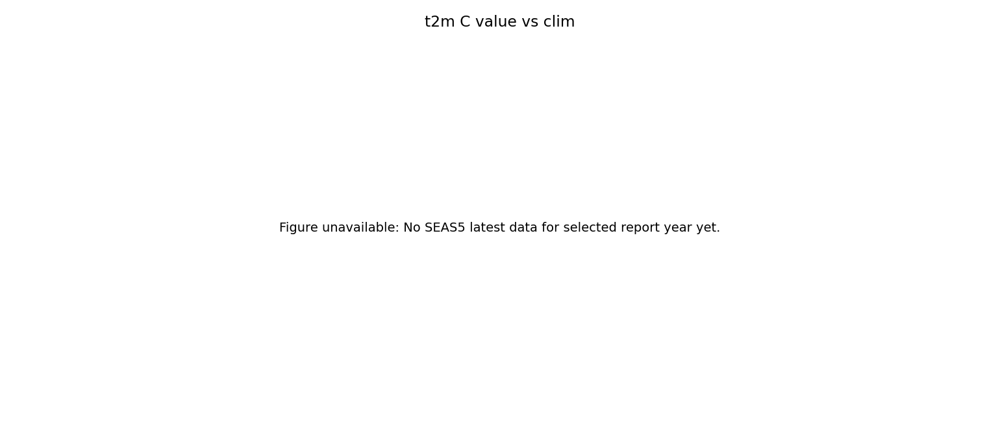
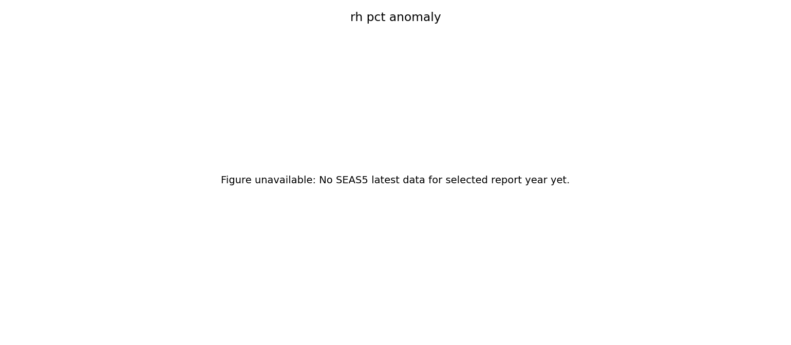
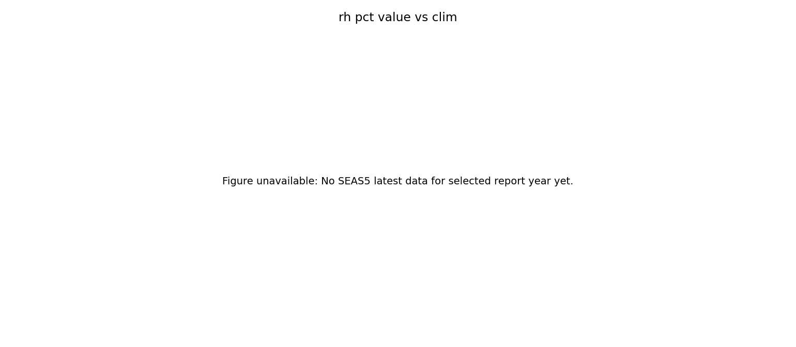
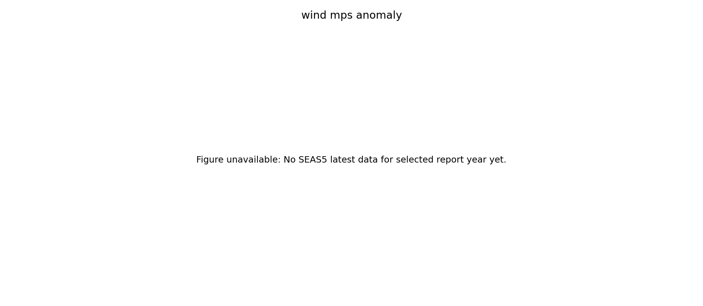
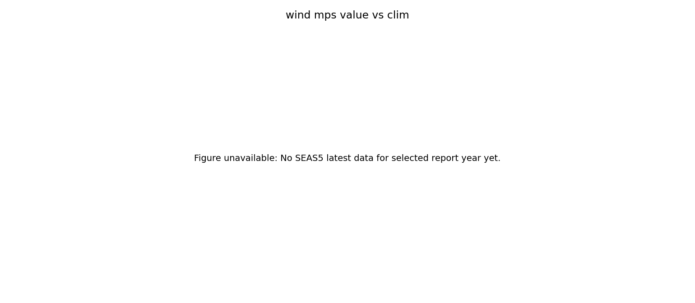
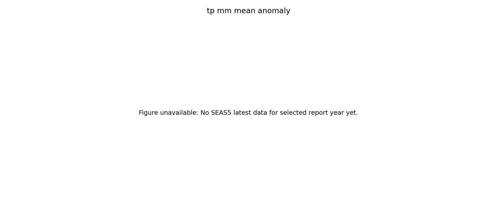
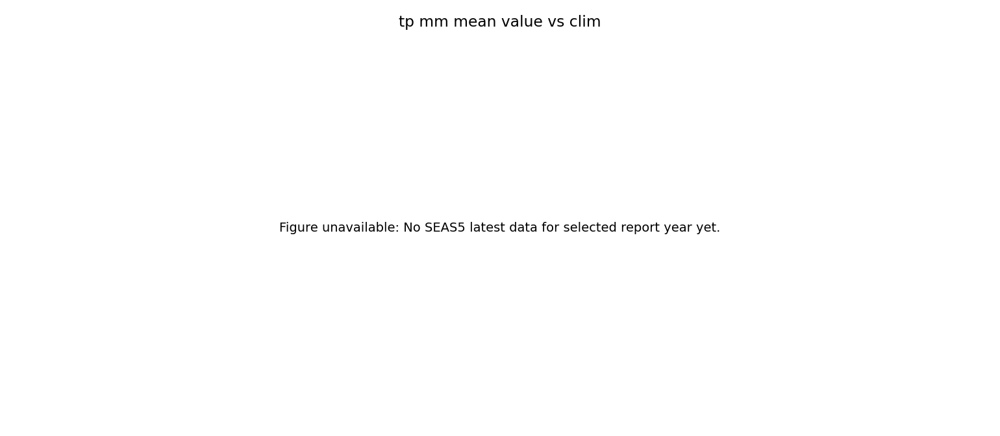

Target point: requested (23.000, 120.000), matched SEAS5 grid (23.000, 120.000), distance=0.000 deg.
Method: nearest-grid matching; climatology 2000-2020 with day-of-year ±7-day window; precipitation dual-track anomaly (difference + ratio).
Timezone alignment: Asia/Taipei.
No SEAS5 latest data for selected report year yet.
| Variable | N | Bias | MAE | RMSE | Corr | Sign hit | Precip ratio MAE |
|---|---|---|---|---|---|---|---|
| t2m_C | 0 | nan | nan | nan | nan | nan | nan |
| rh_pct | 0 | nan | nan | nan | nan | nan | nan |
| wind_mps | 0 | nan | nan | nan | nan | nan | nan |
| tp_mm_mean | 0 | nan | nan | nan | nan | nan | nan |







